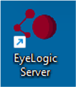

Tabletop Eye tracker: Lite by EyeLogic
Specifications
| Specification | Details |
|---|---|
| Sampling Rate | 60 Hz/120 Hz |
| Gaze Accuracy | < 0.50 (typical) |
| Gaze Spatial Resolution | < 0.10 (typical) |
| Operational Distance | 50 - 85 cm |
| Tracking Area | Width: 30 cm / height: 20 cm (@ 60 cm) |
| PC Interface | USB 3 |
| Blink Recovery Time | 8 ms (@120 Hz) |
| System Latency | 16 ms (@120 Hz) |
| Screen Size | Up to 25 inch |
| Technology | dark pupil, non-invasive video based |
| Operating System | Windows 10 |
Hardware Setup
Out of Box Setup for EyeLogic Eye Tracker
Equipment
The following equipment should be included in the Eyelogic Lite hardware:
- Eye Tracker
- Metal Plates (to attach eye tracker to screen)
- Cleaning wipes
Mount Eye Tracker onto Screen
You can mount the eye tracker onto any screen between 10’’ and 25’’. Remove the adhesive backing from one of the included magnetic metal plates and affix it to the bottom of a display monitor – typically, the participant stimulus display monitor. Allow the adhesive to set for at least twelve hours before magnetically attaching the eye tracker to the magnetic metal plate.
To perform test recording
This eyetracker is plug and play. Once you have the EyeLogic Server set up (see Software Setup) you can plug this machine into the computer, calibrate, and you are ready to go!
The instructions on how to perform a test recording can be found in the see Software Setup, but to summarize below:
- Open the “eyelogiclsl” shortcut on the Desktop.
- Type the following at the command line:
startstream
- Then type this:
calibrate
- You will have the option to choose a number for calibration points (1,2,5,9). Select the number you would like.
- Once you pass calibration, you are ready to go!
A note about the bounding box:
The bounding box for the Eyelogic Lite is 50cm-85cm. For optimal data collection, please place the participant at around 60cm from the monitor. Please tell the participant to sit down and get comfortable and instruct the participant not to move. While the eye-tracker is more forgiving than brain imaging when it comes to the participant moving, it is still best if the participant stays as still as possible.
Software Setup
LabRecoder Setup:
Please refer to LabRecorder Setup from the LSL and Computer Setup Guide.
EyeLogic Server Setup:
This is the required driver package to run EyeLogic devices. It is recommended to always update this software to the newest available version. Download
- Install EyeLogic Server according to the installer instructions
-
Once the installation is complete, start the EyeLogic Server either by double clicking the shortcut on the Desktop or finding it from the Start menu.
 (Note: Nothing will pop-up, it will just silently run in the background).(Click on this icon to see the EyeLogic server panel) -
Toggle Tracking to on. This will show two white circles in the black screen next to the toggle if the eyes are found by the device. - Calibration can also be done in the calibration tab; however, if you would like to use LSL then you need to do calibration when you start the LSL stream.
EyeLogic LSL Plugin Setup:
The EyeLogic integration into LSL includes a client which provides an LSL stream containing data from EyeLogic devices. Download.
- Once EyeLogic Server is up and running with the tracking option on, run the
eyelogiclsl(Shortcut can be found on Desktop - with an MSN icon.) -
EyeLogic LSL console will popup. Type
helpfor a list of available commands.(Note: if the second line does not read: LSL client connected, LSL Server may be off) -
To start the LSL stream, type
startstreamand type your sampling rate (60 / 120). - Once the stream has initiated, it should also show up on the LabRecorder’s list of Streams
EyeLogic Lite Calibration:
- Calibration must be done for accurate eye tracking. Calibration function can be found both in the EyeLogic Server and in the EyeLogic LSL Plugin CLI.
EyeLogic SDK Setup:
The standard development kit is optional and only needed for users who want to access the EyeLogic device via the EyeLogic API. The SDK supports programming languages C++, C, Python, C# and Matlab. After downloading, unzip the file and read the contained pdf documentation to start using the SDK. Download, Python_SDK_Documentation